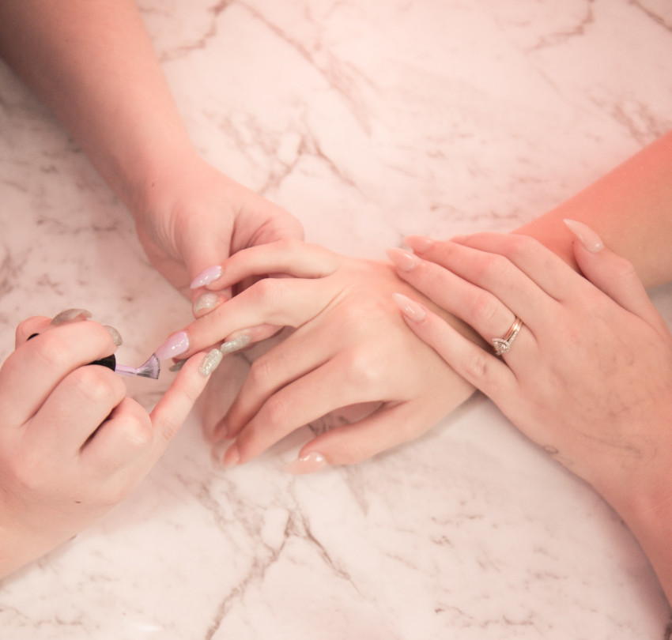

W Salonie Paznokci MANICURE & PEDICURE znajdziesz doświadczone, wykwalifikowane, a co najważniejsze… pełne pasji manicurzystki, gotowe podjąć się każdego, nawet najtrudniejszego wyzwania. Nasze niezawodne stylistki pomogą Ci spełnić marzenia – doradzą, przedstawią możliwości, pomogą dokonać wyboru, sprawią, że na Twojej twarzy zagości uśmiech. Stylizacja oraz pielęgnacja paznokci nie mają przed nami żadnych tajemnic.
MANICURE & PEDICURE to magiczny zakątek dedykowany najbardziej wymagającym kobietom. To wyjątkowe miejsce, w którym przodują jakość i bezpieczeństwo, a na życzenie naszych Klientek również kreatywność. Szerokie spektrum oferowanych rozwiązań kryje w sobie tradycyjne oraz ekskluzywne usługi pielęgnacji paznokci dłoni oraz stóp. Dlaczego nie zarezerwować terminu dziś? Po skorzystaniu z naszych usług, jesteśmy pewni, że spotkamy się jeszcze nie raz..
Od początku istnienia salonu stawiamy na wykonywanie usług związanych z szeroko pojętą stylizacją paznokci – manicure oraz pedicure – przy zachowaniu najwyższej jakości, standardów oraz bezpieczeństwa. Do zabiegów wykorzystujemy tylko kosmetyki renomowanych producentów – niezawodne, trwałe i nowoczesne. Sprzęt wielokrotnego użytku sterylizujemy wykorzystując atestowany, niezawodny autoklaw próżniowo-ciśnieniowy. Pilniki i polerki są przechowywane w pakietach, które są następnie rozpakowywane podczas wizyty w obecności Klienta. Używane są one wyłącznie jednorazowo.
Rezerwacji możesz dokonać poprzez www.booksy.com. Klikając w przycisk zostaniesz przeniesioa(y) do tej strony.
Nasz salon to magiczny zakątek, pazurkowego świata w centrum Krakowa, dedykowany najbardziej wymagającym kobietom. To wyjątkowe miejsce, w którym przodują jakość i bezpieczeństwo, a na życzenie naszych Klientek również kreatywność. Szerokie spektrum oferowanych rozwiązań kryje w sobie tradycyjne oraz ekskluzywne usługi pielęgnacji paznokci dłoni oraz stóp.
MANICURE & PEDICURE to magiczny zakątek dedykowany najbardziej wymagającym kobietom. Miejsce, w którym przodują jakość i bezpieczeństwo. Szerokie spektrum oferowanych rozwiązań kryje w sobie tradycyjne oraz ekskluzywne usługi pielęgnacji paznokci dłoni oraz stóp.